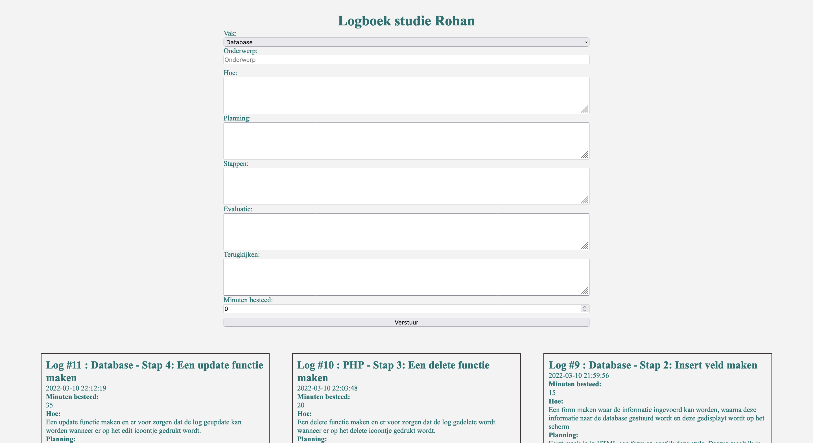

Projects I have made

Logboek (Log)
For my study I've mad a log to keep track of what I have done, how I have done it and how long it took.
Github

Interactive Audiobook (Work in progress)
I have made an interactive audiobook for students from the healthcare department of my school.
Github

My next project......
When I've started my next project, it will be shown here